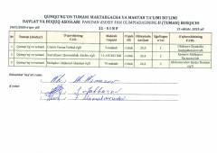

DVDavlat va huquq asoslari fanidan maktab o'quvchilari olimpiadasi natijalari qaydnomasi.
Ushbu hujjatda Qumqo'rg'on tumanidagi 11-sinf o'quvchilari uchun davlat va huquq asoslari fanidan o'tkazilgan fan olimpiadasining tuman bosqichi natijalari keltirilgan. Unda o'quvchilarning to'plagan ballari, maktablari va o'qituvchilari haqida ma'lumotlar qayd etilgan.